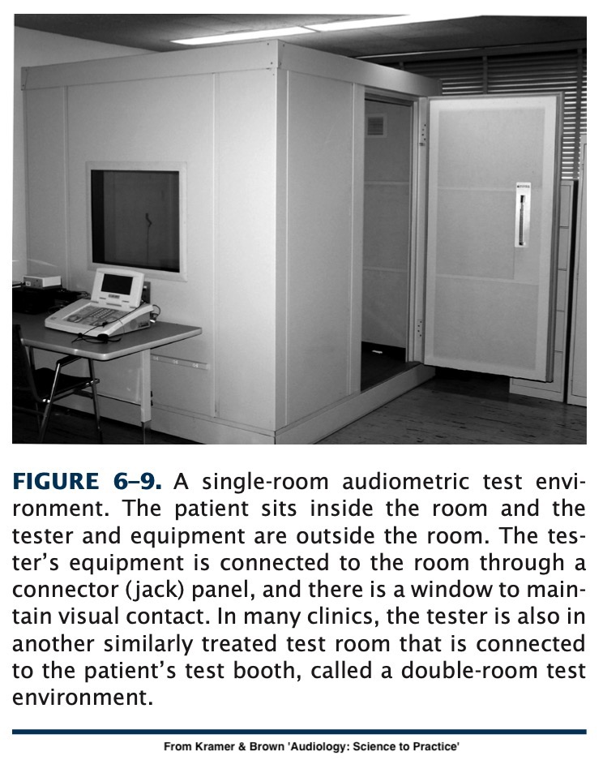
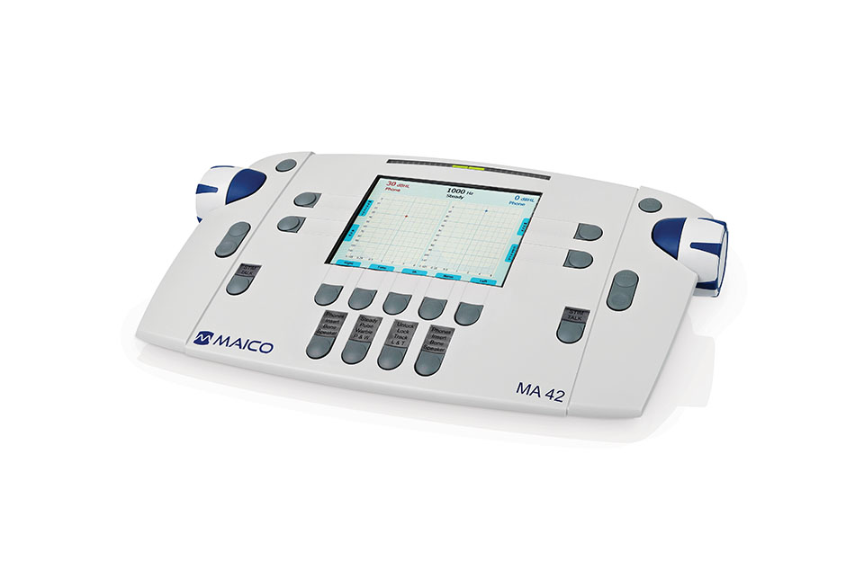
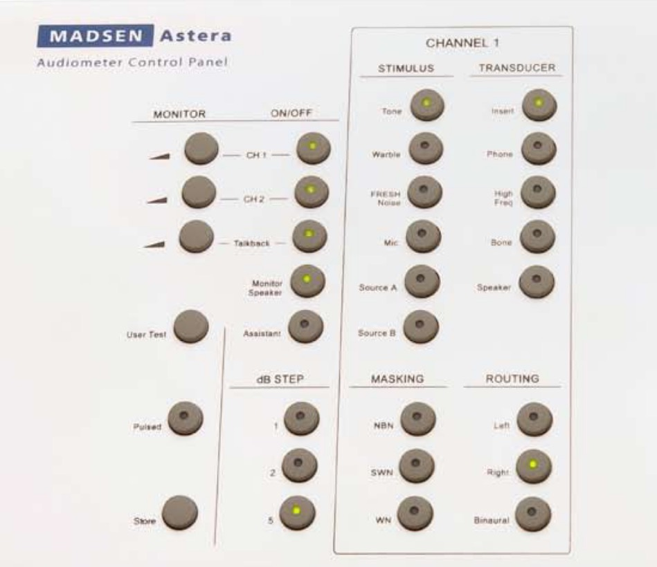
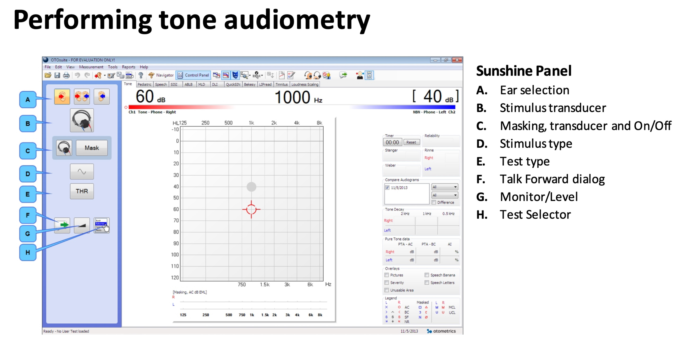
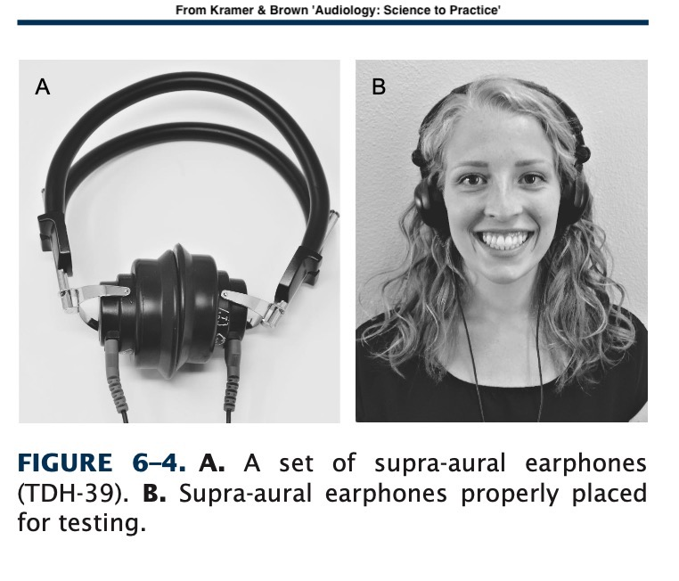
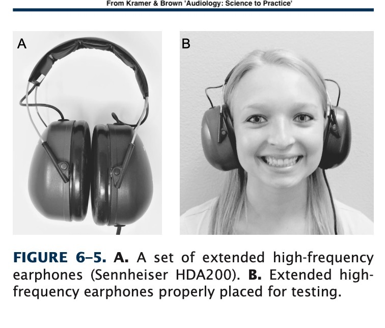
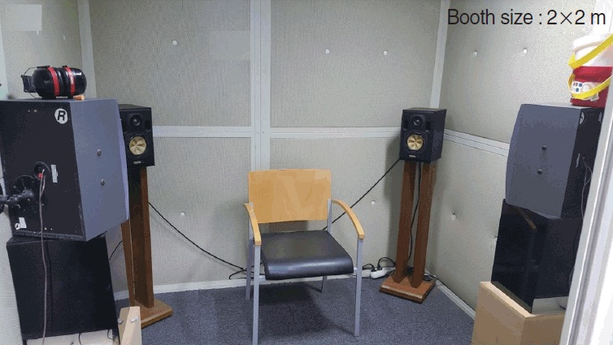
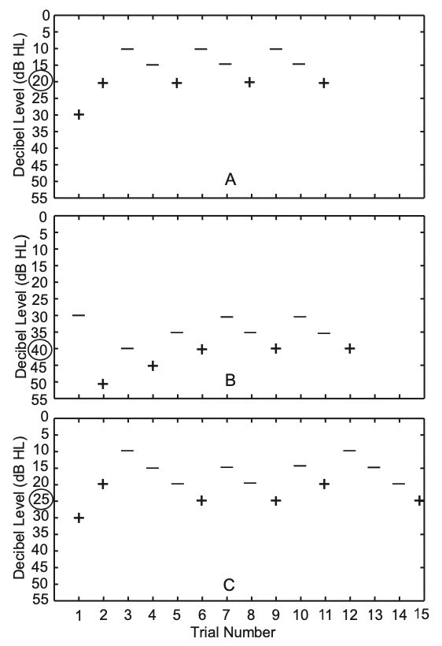
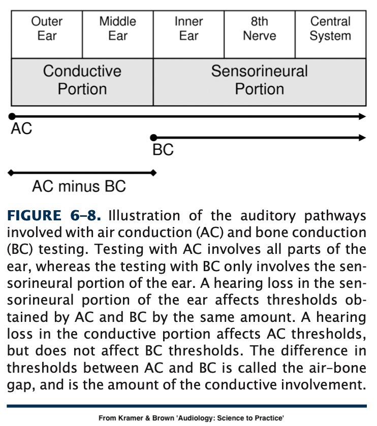
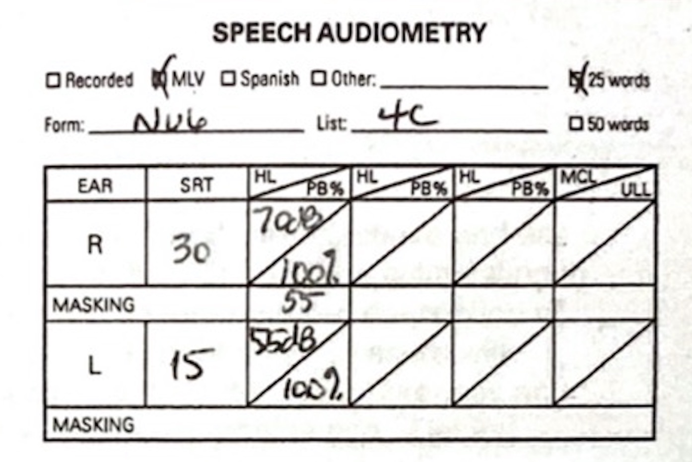

Otoscopy, Tympanometry, Acoustic Reflex Testing, OAEs, and ABR Testing
Let’s bring the human element back
How well you can hear sounds at different frequencies and amplitudes
How well you can hear speech at different amplitudes
Both test your ability to use your hearing
Audiometric Testing Equipment
Pure-tone Audiometry
Speech Audiometry
Reading an audiogram
<img class=“r-stretch

Lowers the ‘noise floor’
The signals being presented will have no ‘competition’
You can only test sounds > RoomNoise - AttenuationOfHeadphones
Don’t trust the low end of a test done in a noisy booth!
Adjust the amplitude of the tone
Adjust the frequency of the tone
Send the tone



Talk and listen to the patient inside the booth
Masking noise
Choice of transducers
Choice of stimulus type


Audiologists refer to ‘headphones’ as transducers
These turn output from the audiometry box into sound
Different transducers for different goals
Audiological transducers are very ‘flat’ by design





60 dB in software is meaningless when transducers and outputs vary
Professional calibration guarantees that the 60dB setting generates 60dB tones
Each transducer type must be calibrated separately
Calibration should be done yearly, ~$100 USD
Without calibration, all you know is relative frequency results
This is why online or DIY tests aren’t very reliable!
Measures the amplitude required to hear a “pure tone” at a variety of frequencies.
“Press the button when you hear a beep”
Pure Tones
Warble Tones
Pulsed Tones
Pulsed Tones and Warble Tones are more easily distinguished from tinnitus’
Pick one and use it, thresholds aren’t comparable across tone types
Pure:
Pulsed (200ms):
Warble (3 Hz):
“What is the lowest amplitude sound this patient can hear by frequency?”
Thresholds are usually taken between 250-8000Hz
The end result is an audiogram
Play a tone at a given frequency
Wait for participant response
If they hear it, go quieter
If they don’t, go louder
… but you need to make sure they’re not cheating!
False positives are responses when no tone is audible
False negatives are failures to respond to a tone they can hear
Randomly timing your presses to avoid guessing
Facing the patient away from you
Using a testing paradigm to arrive at the proper measurement
Not allowing patients to measure their own hearing



Contralateral masking helps prevent one ear from ‘helping’ the other
See the ‘Masking’ video for details there
Or Chapter 9 in your textbook
High frequency audiograms go above 8000 Hz
This requires more specialized equipment
Useful for monitoring some kinds of ototoxic drugs and detecting loss early
The book goes into more details about testing kids, procedures, and other complexities!
Chapter 6 is your friend!
Raw ability to hear frequencies
… but often, poor speech intelligibility is the biggest complaint
Why not test speech perception directly?
How loud does speech need to be for them to hear that speech is being produced?
How loud does speech need to be to be understandable?
How accurately are they recognizing the words?
Read words aloud with the level limited to certain amplitudes
Ask the participant to repeat the words back
Score…
Whether they heard the word (SDT)
Whether they accurately heard the word (SRT)
Individual Phoneme Errors (WRS)
Repeat the task with masking noise to check perception in noise
Attempting to use words which are familiar to everybody
Audiologists use monosyllables and “spondees”, words with two stressed syllables
Words from the NU-6 Listing: sidewalk, birthday, cupcake, airplane, railroad, baseball, playground, cowboy, sunset, hotdog, outside…
A new list: smartphone, hashtag, upload, bikeshare, cashcow, laptop, iPad, flashmob, backpack, deadbeat, bandwidth, roadrage…
This is complicated, and there are many moving parts
You can use masking if the required level exceeds interaural attenuation
You can also do recognition in noise to get a better sense of in-the-world recogition
These are detailed in Chapter 8
Generally you’ll report SDT and SRT in dB
You’ll report maximum “PB” (phonetically balanced word recognition) and associated level for SRT
More detailed tests give more detailed results

What is the nature, severity, and distribution of hearing loss?
What of this loss is present in bone conduction as well?
How does this loss affect their ability to hear speech?


We know what frequencies and amplitudes exist in the world
We see the difference between masked and unmasked
Sounds which are ‘above the line’ are not going to be audible
This gives rise to…

… and interpreting the audiogram is a skill we’ll be working on
Often, audiograms (with the other tests we’ve discussed) provide key diagnostic information
Reading Chapter 7 is important!

 —
—
Audiometric Testing Equipment is specialized and expensive
Puretone Audiometry gives us absolute thresholds for hearing by frequency
Speech Audiometry gives us a better sense of how speech is perceived
Audiograms give us all the information we need in one convenient place